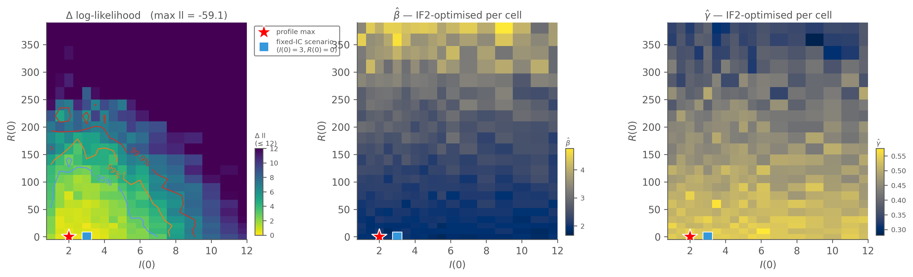
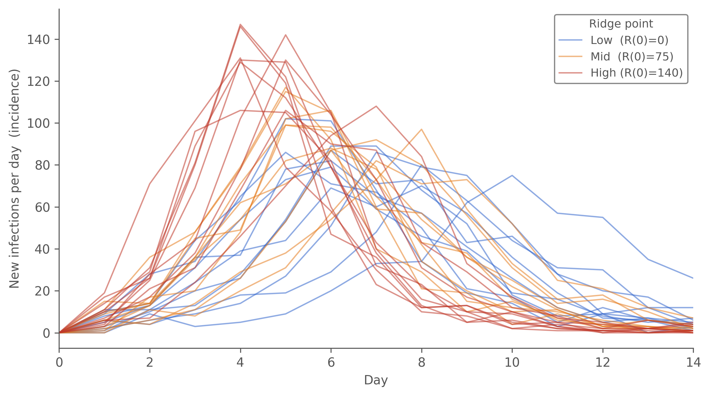
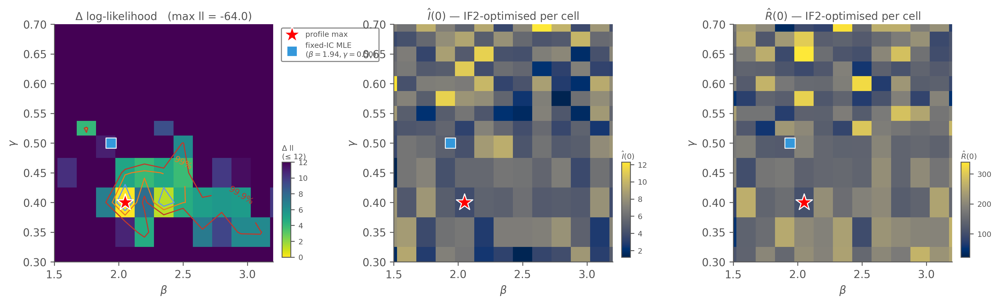

Diagnosing when the data isn’t enough — joint IF2 failure, profile likelihoods, and the ridge problem
The Likelihood Fitting chapter landed on a calibrated fit: SIR + Poisson with fixed initial conditions (\(I(0) = 3\), \(R(0) = 0\)), at the faithful \(dt = 0.1\), converged on the gate (Â and decibans both ✓) with a posterior-predictive envelope that comfortably covers the data (\(R_0 \approx 3.87\)). That fit is adequate. But adequacy is not the same as identification: \(I(0) = 3\) and \(R(0) = 0\) were modelling commitments the fit never tested, and “the model with those values fits” doesn’t tell us “the data picks those values.”
This chapter asks the question the calibrated fit didn’t have to: what if we let the initial conditions free? We’ll show with a failed joint fit and a sequence of profile likelihoods that the data on its own cannot identify \((\beta, \gamma, I(0), R(0))\) jointly from 14 observations — there’s a ridge in \((I(0), R(0))\) along which the likelihood is nearly flat, and the dynamical parameters \((\beta,
\gamma)\) ride along it. The chapter’s central finding is geometric: two pictures (a 2D profile in initial conditions, a 2D profile in dynamical rates) make the data’s identifiability budget visible — what the data tightly identifies, what it loosely identifies, and the operational consequences when “loosely” maps to “\(R_0\) swings by ~40 % across the Wilks-95 % ridge, and out to \(R_0 \approx 7\) if you follow the ridge to where the data finally objects.”
How to break the ridge — informed priors, joint fits to multiple outbreaks, additional measurements like seroprevalence — is left for its own chapter. This one stops at the diagnosis: the data is not enough, and here is exactly what “not enough” looks like.
On Sunday 22 January three boys were in the college infirmary.
Three boys in the infirmary. The model maps prevalence(I) ↔︎ in_bed, treating the infirmary count as the entire infectious compartment. But:
Pre-bed-confined infectious cases: a boy could be infectious for ~12-24 hours before being sent to the infirmary. If 4-6 such boys exist on the morning of 22 January, the true \(I(0)\) for transmission modelling is closer to 7-9 than to 3.
R(0) is not necessarily zero. The BMJ note records that Fluvirin had been given to 630 of 763 boys in October 1977, but notes the vaccine did not include the H1N1 strain. Cross-reactive immunity from earlier flu exposures might still leave a fraction of the school in the recovered/immune compartment from the model’s perspective. R(0) = 0 in the previous chapter was an explicit modelling assumption — defensible (no documented prior outbreak at the school in the term before), but a commitment we should test by letting the data weigh in.
The fixed-IC chapter quietly committed to both: \(I(0) = 3\), \(R(0) = 0\). That those values give a calibrated fit doesn’t mean they’re the only values that do — and as the profiles below show, they aren’t even close to unique.
The data alone cannot identify \((\beta, \gamma, I(0), R(0))\)
NoteNotation: \(R(0)\) vs. \(R_0\)
Two quantities share an “R” letter and are easy to confuse:
\(R(0)\) — the initial recovered population at time zero (model parameter R_init). A count of boys in the recovered compartment at \(t = 0\). Values range from 0 to ~400 in this chapter. Free to estimate.
\(R_0\) (basic reproduction number) — a derived dimensionless quantity, \(R_0 = \beta / \gamma\). The expected number of secondary infections from one index case in a fully-susceptible population. Values 2–7 here.
This chapter is mostly about \(R(0)\) — the initial-condition parameter the data fails to identify alongside \(\beta, \gamma, I(0)\). \(R_0\) shows up only as a derived summary at the end. We use parentheses, \(R(0)\), throughout to keep them distinct.
The fit configuration: same Poisson SIR, same backend, same IF2 budget, but with \(I(0)\) and \(R(0)\) now in [estimate] instead of [fixed].
fits/poisson_free_ic.toml
# Free-initial-conditions fit: Poisson SIR with I(0) and R(0) estimated# alongside β and γ. Same IF2 budget as the fixed-IC fit, but four# parameters instead of two.## Expected outcome: scout's compound gate will refuse to run refine —# the joint surface has a wide ridge in (I(0), R(0)) along which (β, γ)# re-tune. This is a *finding about the data*, demonstrating that 14# daily counts do not identify all four parameters jointly. The# priors chapter (forthcoming) shows how informed external priors on# R(0) collapse this ridge into a coherent posterior.## We do NOT use --allow-nonconverged-scout. The principled response# to a failed gate here is profile likelihoods (run via `camdl profile`# in a separate cell), not laundering scout output.[model]camdl="../models/boarding_school_sir_init.camdl"output_dir="../results/poisson_free_ic"scenario="baseline"[data.observations]in_bed="../data/in_bed.tsv"[config]backend="chain_binomial"dt=0.1[estimate]beta={ bounds =[0.5,5.0], start =1.5 }gamma={ bounds =[0.1,1.0], start =0.4 }# I(0) and R(0) flagged as ivp = true: still gated for chain agreement# (Â reported), but the gate's pass criterion is more lenient on these# than on dynamical parameters — Â failures on ivp parameters are# expected and don't block refine. (The chapter's whole point is that# they fail anyway, joint with β-γ.)I0={ bounds =[1.0,20.0], start =3.0, ivp =true, rw_sd =0.10 }R_init={ bounds =[0.0,400.0], start =0.0, ivp =true, rw_sd =5.0 }[fixed]N0=763[stages.scout]algorithm="if2"backend="chain_binomial"chains=48particles=2000iterations=250cooling=0.9[stages.refine]algorithm="if2"backend="chain_binomial"chains=12particles=4000iterations=400cooling=0.98starts_from="scout"[stages.refine.gate]a_thresh=1.05
ivp = true flags both as initial-value-problem parameters: still reported (Â shown in the gate output) but not part of the gate’s pass criterion. Even with that latitude on \(I(0)\) and \(R(0)\) the gate fails on \(\beta\) and \(\gamma\) as we’ll see now.
$ camdl fit run fits/poisson_free_ic.toml --seed 28 --label "Poisson, free I0 R0"
fit: fits/poisson_free_ic.toml (2 stages)
model: fits/../models/boarding_school_sir_init.camdl
estimate: beta, gamma, I0, R_init
fixed: N0
output: results/fits/poisson_free_ic-e468a481
── stage: scout (method=if2) ──
running 48 chains × 2000 particles × 250 iterations, cooling=0.9, dt=0.1
transforms:
I0 log [1, 20] log(10.3924) = 2.34 rw_sd=0.1000 (0.010/step, explicit)
R_init log [0, 400] log(35.5895) = 3.57 rw_sd=5.0000 (0.140/step, explicit)
beta log [0.5, 5] log(0.8206) = -0.20 rw_sd=0.1820 (0.222/step, auto)
gamma log [0.1, 1] log(0.2432) = -1.41 rw_sd=0.0364 (0.150/step, auto)
⚠ 2/4 parameters using auto rw_sd. Check traces and set explicit values.
cooling: cf50=0.90 over 250 iterations × 14 observations
iter 1: rw_sd at 99.5%
iter 125: rw_sd at 56.9% (halfway)
iter 250: rw_sd at 32.3%
[2026-05-14T23:11:27Z INFO camdl::fit::runner] fit chain 22 iter 1/250 ll=-66.5
[2026-05-14T23:11:27Z INFO camdl::fit::runner] fit chain 7 iter 1/250 ll=-66.3
[2026-05-14T23:11:27Z INFO camdl::fit::runner] fit chain 37 iter 1/250 ll=-84.2
[2026-05-14T23:11:27Z INFO camdl::fit::runner] fit chain 1 iter 1/250 ll=-127.2
[2026-05-14T23:11:27Z INFO camdl::fit::runner] fit chain 19 iter 1/250 ll=-64.7
[2026-05-14T23:11:27Z INFO camdl::fit::runner] fit chain 24 iter 1/250 ll=-68.4
[2026-05-14T23:11:27Z INFO camdl::fit::runner] fit chain 21 iter 1/250 ll=-71.3
[2026-05-14T23:11:27Z INFO camdl::fit::runner] fit chain 13 iter 1/250 ll=-67.4
[2026-05-14T23:11:27Z INFO camdl::fit::runner] fit chain 18 iter 1/250 ll=-67.9
[2026-05-14T23:11:27Z INFO camdl::fit::runner] fit chain 25 iter 1/250 ll=-66.3
[2026-05-14T23:11:27Z INFO camdl::fit::runner] fit chain 20 iter 1/250 ll=-64.3
[2026-05-14T23:11:27Z INFO camdl::fit::runner] fit chain 23 iter 1/250 ll=-167.9
[...318 lines omitted...]
- narrow bounds to the basin scout's best chain found
- mark weakly-identified params as `ivp = true`
(reported but not gated)
To run refine anyway (results may launder multi-modality):
camdl fit run fit.toml --allow-nonconverged-scout
Outcome — exactly as predicted. Scout’s compound gate refuses to run refine: chain-agreement  reaches 2.96 on \(\beta\) and 2.54 on \(\gamma\) (the ivp parameters are even worse —  ≈ 37 on \(I(0)\), ≈ 15 on \(R(0)\) — but those aren’t gated), and the across-chain log-likelihood spread is 88 nats with 14 of 48 chains diverging. That’s not a budget problem — chains are settling in genuinely different basins, and the gate is correctly refusing to launder the multimodality into a single point estimate.
Warning
We do not bypass the gate with --allow-nonconverged-scout. The gate is doing its job; the principled response is profile likelihoods (here) or informed priors (Section 2 below), not laundering a multimodal scout into a single MLE.
2D profile: \((I(0), R(0))\) with \((\beta, \gamma)\) optimised per cell
Sweep over \((I(0), R(0))\) on a 12 × 12 grid; at each cell, run IF2 to optimise \((\beta, \gamma)\). Each cell’s reported log-likelihood is the conditional maximum — what the data prefers at that fixed \((I(0),
R(0))\) point with the dynamical parameters re-tuned. The two nuisance-MLE panels show what β and γ had to become at each cell to achieve that conditional max — that’s where the ridge geometry becomes visible.
profile: using observation model 'in_bed' from IR
profile (1 replicate): results/profiles/boarding_school_sir_init-92be0d97
profile: 528 grid (I0=24 × R_init=22) × 3 starts × 1 seeds = 1584 IF2 runs (1500 particles × 80 iter each)
[2026-05-14T23:12:22Z INFO camdl::profile] profile: 528 grid points × 3 starts × 1 seeds = 1584 jobs
[2026-05-14T23:12:25Z INFO camdl::profile] profile: 1/1584 jobs complete
[2026-05-14T23:12:56Z INFO camdl::profile] profile: 98/1584 jobs complete
[2026-05-14T23:13:26Z INFO camdl::profile] profile: 195/1584 jobs complete
[2026-05-14T23:13:56Z INFO camdl::profile] profile: 292/1584 jobs complete
[2026-05-14T23:14:26Z INFO camdl::profile] profile: 388/1584 jobs complete
[2026-05-14T23:14:57Z INFO camdl::profile] profile: 497/1584 jobs complete
[2026-05-14T23:15:27Z INFO camdl::profile] profile: 593/1584 jobs complete
[2026-05-14T23:15:57Z INFO camdl::profile] profile: 689/1584 jobs complete
[2026-05-14T23:16:28Z INFO camdl::profile] profile: 785/1584 jobs complete
[2026-05-14T23:16:58Z INFO camdl::profile] profile: 883/1584 jobs complete
[2026-05-14T23:17:28Z INFO camdl::profile] profile: 986/1584 jobs complete
[2026-05-14T23:17:59Z INFO camdl::profile] profile: 1090/1584 jobs complete
[2026-05-14T23:18:29Z INFO camdl::profile] profile: 1186/1584 jobs complete
[2026-05-14T23:18:59Z INFO camdl::profile] profile: 1283/1584 jobs complete
[2026-05-14T23:19:30Z INFO camdl::profile] profile: 1384/1584 jobs complete
[2026-05-14T23:20:01Z INFO camdl::profile] profile: 1484/1584 jobs complete
[2026-05-14T23:20:31Z INFO camdl::profile] profile: 1577/1584 jobs complete
[...19 lines omitted...]
[2026-05-14T23:18:59Z INFO camdl::profile] profile: 1283/1584 jobs complete
[2026-05-14T23:19:30Z INFO camdl::profile] profile: 1384/1584 jobs complete
[2026-05-14T23:20:01Z INFO camdl::profile] profile: 1484/1584 jobs complete
[2026-05-14T23:20:31Z INFO camdl::profile] profile: 1577/1584 jobs complete
[2026-05-14T23:20:35Z INFO camdl::profile] profile: 1584/1584 jobs complete
written to output/profile_i0_r0.tsv
show code
i0r0 = pl.read_csv("output/profile_i0_r0.tsv", separator="\t", comment_prefix="#")fig, axes = plot_profile_2d( i0r0, focal_x="I0", focal_y="R_init", nuisance_params=["beta", "gamma"], labels={"I0": "$I(0)$", "R_init": "$R(0)$","beta": "$\\hat\\beta$", "gamma": "$\\hat\\gamma$"}, reference_points=[ (3, 0, MARKER_SQUARE, "fixed-IC scenario\n$(I(0)=3, R(0)=0)$"), ],)# Focus on the informative range — the I(0) ridge runs through low# values, the high-I(0) end is uniformly flat.for ax in axes: ax.set_xlim(right=12)fig.tight_layout()

Figure 10.1: 2D profile likelihood over \((I(0), R(0))\) with \((\beta, \gamma)\) IF2-optimised per cell. Top-left: Δ log-likelihood from the profile maximum (red star). Wilks 2D contours mark 95 / 99 / 99.9 % joint CIs (Δll = 3.00 / 4.61 / 6.91). Top-right & bottom: the conditional MLEs \(\hat\beta(I(0), R(0))\) and \(\hat\gamma(I(0), R(0))\). β̂ trades off systematically along the ridge — low \(R(0)\) pairs with low β̂; high \(R(0)\) requires higher β̂ to compensate for the shrunk susceptible pool. γ̂ is more stable. The blue square marks the fixed-IC scenario \((I(0)=3, R(0)=0)\) used in the likelihood chapter — essentially at the profile maximum here, but the ridge in \(R(0)\) extends well above it without the log-lik moving much.
Does the ridge in \(R(0)\) uncertainty matter? (yes)
The profile log-likelihood says all points along the ridge fit the data about equally well. But do they predict the same outbreak dynamics? Sloppy directions in a likelihood are not always sloppy in observables. If the ridge is sloppy in fit but tight in prediction, the identifiability problem is academic — every defensible point on the ridge gives the same forecast and the choice of \(R(0)\) doesn’t matter operationally. If the ridge is sloppy in prediction too, then the choice of \(R(0)\) is a load-bearing modelling commitment that the data alone refuses to settle. Below we show the second case is what holds here.
We test this by picking three (I(0), R(0)) points along the ridge, all inside the 95 % Wilks 2D region (Δll < 3.0 of the profile max — any of them would be a defensible MLE), and forward-simulating 10 chain-binomial trajectories at each point’s conditional MLE \((\hat\beta, \hat\gamma)\):
label
I(0)
R(0)
β̂ (cond.)
γ̂ (cond.)
\(R_0 = \hat\beta / \hat\gamma\)
Δll
Low (no immunity)
3
0
1.85
0.54
3.41
0.08
Mid (~10 % immunity)
4
75
2.09
0.56
3.74
1.72
High (~18 % immunity)
4
140
2.43
0.50
4.83
2.62
(Note the column distinction: \(R(0)\) is the initial recovered count; \(R_0\) is the basic reproduction number \(\hat\beta / \hat\gamma\). These are different quantities — see the callout above.)
show forward-simulation code
import tempfilefrom _lib.sim import run_simulate# Three ridge points (read from the profile data — these are the# conditional MLE values so each scenario is "the best fit at that# IC pair").points = [ ("Low (R(0)=0)", 3, 0, 1.846, 0.542), ("Mid (R(0)=75)", 4, 75, 2.094, 0.559), ("High (R(0)=140)", 4, 140, 2.433, 0.503),]def _params_toml(I0, R_init, beta, gamma):"""Write a one-shot params toml; returns path.""" f = tempfile.NamedTemporaryFile("w", suffix=".toml", delete=False) f.write(f"beta = {beta}\ngamma = {gamma}\nN0 = 763\n"f"I0 = {I0}\nR_init = {R_init}\n") f.close()return f.namescenarios = { label: run_simulate("models/boarding_school_sir_init.camdl", _params_toml(I0, R0, b, g), seed=28, replicates=10, scenario="baseline", backend="chain_binomial", dt=0.1, )for label, I0, R0, b, g in points}
show code
import matplotlib.pyplot as pltimport numpy as npscenario_colors = {"Low (R(0)=0)": "#3366cc","Mid (R(0)=75)": "#e67e22","High (R(0)=140)": "#c0392b",}fig, ax = plt.subplots(figsize=(8, 4.5))for label, _, _, _, _ in points: df = scenarios[label] color = scenario_colors[label] reps = df["replicate"].unique().to_list()for k, rep inenumerate(reps): sub = df.filter(pl.col("replicate") == rep).sort("t") ax.plot(sub["t"], sub["flow_infection"], color=color, alpha=0.55, linewidth=1.1, label=label if k ==0elseNone)ax.set_xlabel("Day")ax.set_ylabel("New infections per day (incidence)")ax.set_xlim(0, 14)ax.spines[["top", "right"]].set_visible(False)leg = ax.legend(frameon=True, facecolor="white", edgecolor="#888888", framealpha=1.0, fontsize=9, loc="upper right", title="Ridge point")leg.get_title().set_fontsize(9)fig.tight_layout()# A quick numeric summaryprint()print(f"{'scenario':>16}{'peak day':>10}{'peak inc':>10}{'final size':>12}")for label, I0, R0, b, g in points: df = scenarios[label] medians = (df.group_by("t") .agg(pl.col("flow_infection").median().alias("med")) .sort("t")) peak_t =int(medians.sort("med", descending=True)["t"][0]) peak_v =int(medians.sort("med", descending=True)["med"][0]) fsize =int(df.filter(pl.col("t") ==14)["R"].median()) if14in df["t"] elseNone final = (df.group_by("replicate") .agg(pl.col("R").last().alias("R_final")) ["R_final"].median())print(f"{label:>16}{peak_t:>10}{peak_v:>10}{final:>12.0f}")
scenario peak day peak inc final size
Low (R(0)=0) 6 75 672
Mid (R(0)=75) 5 90 700
High (R(0)=140) 4 117 736

Figure 10.2: Forward-simulated incidence (flow_infection, new infections per day) at three points along the \((I(0), R(0))\) ridge — all inside the 95 % Wilks 2D CI of the profile, any of which would be a defensible MLE if we accepted the data alone. Each scenario contributes 10 chain-binomial replicates at its conditional \((\hat\beta, \hat\gamma, I(0), R(0))\). Cool-to-warm colour: \(R(0) = 0\) (blue) → \(R(0) = 140\) (red). The trajectories visibly separate: the high-\(R(0)\) scenario peaks ~1.5× higher and 2 days earlier than the low-\(R(0)\) one. The data on its own can’t pick between them.
Reading. Three scenarios the likelihood barely separates (all Δll < 3, well inside the Wilks 2D 95 % region) produce visibly different incidence trajectories. The high-\(R(0)\) point has \(R_0 \approx 4.8\) and peaks early at ~120 new infections per day; the low-\(R(0)\) point has \(R_0 \approx 3.4\) and peaks two days later at ~75. Both fit the in-bed prevalence data nearly equally well — the data sees the prevalence trajectory, which can be matched at different \((\beta, R(0))\) combinations because high-\(\beta\) + small-susceptible and low-\(\beta\) + large-susceptible can both produce a similar peak height in the current infectious population.
But the basic reproduction number — the headline epidemiological summary you’d report to a public-health audience — varies by about 40 % across the Wilks-95 % ridge (≈3.4 to ≈4.8), and that spread keeps widening past the 95 % edge (the 1D \(R(0)\) profile below reaches \(R_0 \approx 7\) before the data finally objects). And the incidence trajectory differs by ~50 % in peak height and 2 days in peak timing.
That’s the operational consequence of an unidentified ridge in \((I(0), R(0))\): absent external information, you cannot pin down \(R_0\) either, because \(R_0 = \beta / \gamma\) inherits the trade-off that \(\beta\) takes on along the ridge. Section 2’s prior on \(R(0)\) has to fix this if the chapter’s headline answer is going to be a defensible \(R_0\) at all.
2D profile: \((\beta, \gamma)\) with \((I(0), R(0))\) optimised per cell
The mirror profile: now \((\beta, \gamma)\) is the swept axis pair, and the initial conditions re-tune at each cell.
profile: using observation model 'in_bed' from IR
profile (1 replicate): results/profiles/boarding_school_sir_init-66302bda
profile: 378 grid (beta=21 × gamma=18) × 3 starts × 1 seeds = 1134 IF2 runs (1500 particles × 80 iter each)
[2026-05-14T23:20:35Z INFO camdl::profile] profile: 378 grid points × 3 starts × 1 seeds = 1134 jobs
[2026-05-14T23:20:38Z INFO camdl::profile] profile: 1/1134 jobs complete
[2026-05-14T23:21:08Z INFO camdl::profile] profile: 108/1134 jobs complete
[2026-05-14T23:21:38Z INFO camdl::profile] profile: 210/1134 jobs complete
[2026-05-14T23:22:08Z INFO camdl::profile] profile: 313/1134 jobs complete
[2026-05-14T23:22:38Z INFO camdl::profile] profile: 416/1134 jobs complete
[2026-05-14T23:23:08Z INFO camdl::profile] profile: 515/1134 jobs complete
[2026-05-14T23:23:38Z INFO camdl::profile] profile: 615/1134 jobs complete
[2026-05-14T23:24:09Z INFO camdl::profile] profile: 716/1134 jobs complete
[2026-05-14T23:24:39Z INFO camdl::profile] profile: 817/1134 jobs complete
[2026-05-14T23:25:10Z INFO camdl::profile] profile: 920/1134 jobs complete
[2026-05-14T23:25:41Z INFO camdl::profile] profile: 1021/1134 jobs complete
[2026-05-14T23:26:12Z INFO camdl::profile] profile: 1116/1134 jobs complete
[...14 lines omitted...]
[2026-05-14T23:24:39Z INFO camdl::profile] profile: 817/1134 jobs complete
[2026-05-14T23:25:10Z INFO camdl::profile] profile: 920/1134 jobs complete
[2026-05-14T23:25:41Z INFO camdl::profile] profile: 1021/1134 jobs complete
[2026-05-14T23:26:12Z INFO camdl::profile] profile: 1116/1134 jobs complete
[2026-05-14T23:26:14Z INFO camdl::profile] profile: 1134/1134 jobs complete
written to output/profile_bg_free_ic.tsv
show code
bg = pl.read_csv("output/profile_bg_free_ic.tsv", separator="\t", comment_prefix="#")fig, axes = plot_profile_2d( bg, focal_x="beta", focal_y="gamma", nuisance_params=["I0", "R_init"], labels={"beta": "$\\beta$", "gamma": "$\\gamma$","I0": "$\\hat I(0)$", "R_init": "$\\hat R(0)$"}, reference_points=[ (1.94, 0.50, MARKER_SQUARE, "fixed-IC MLE\n$(\\beta=1.94, \\gamma=0.50)$"), ],)# Focus on the informative basin around the MLE.for ax in axes: ax.set_xlim(1.5, 3.2) ax.set_ylim(0.3, 0.7)fig.tight_layout()

Figure 10.3: 2D profile likelihood over \((\beta, \gamma)\) with \((I(0), R(0))\) IF2-optimised per cell. Top-left: Δ log-lik with Wilks contours and profile-max star. Top-right & bottom:\(\hat I(0)(\beta, \gamma)\) and \(\hat R(0)(\beta, \gamma)\) — at low-β cells the optimiser pushes \(R(0)\) high and vice versa, the same trade-off as the previous figure but viewed from the orthogonal axis. The blue square marks the fixed-IC MLE from the likelihood chapter at \((\beta=1.94, \gamma=0.50)\) — a point inside the 95 % CI but not the profile max because the profile lets \((I(0), R(0))\) readjust away from the fixed values.
Reading.
\((I(0), R(0))\) profile maximum sits at \((I(0) = 2.5, R(0) = 0)\) with ll = −58.6 — essentially the fixed-IC scenario. The 95 % Wilks region covers 102 of 528 cells (19 %) — a diagonal ridge running from low-\(I(0)\) low-\(R(0)\) up through moderate \(R(0)\). The β̂-MLE panel shows β rising from ~1.85 to ~3.5 along the ridge as \(R(0)\) increases (and on out toward β ≈ 4 at the far, sub-95 % end).
\((\beta, \gamma)\) profile maximum sits at \((\beta = 2.20, \gamma = 0.40)\) with ll = −61.5 (the conditional re-optimisation of \((I(0), R(0))\) per cell doesn’t quite reach the basin the orthogonal sweep finds — hence the ~3-nat offset), with conditional MLEs \(\hat I(0) \approx 4.3\), \(\hat R(0) \approx 80\). The 95 % region covers only 11 of 378 cells (3 %) — a tight ellipse.
The geometry is the identifiability story in two pictures: the data identifies transmission rates tightly (small region in \((\beta, \gamma)\)) but identifies initial conditions loosely (a ridge in \((I(0), R(0))\) six times broader than the \((\beta, \gamma)\) region). The β̂ panel of the first figure makes the trade-off concrete — at fixed \(I(0) = 3\), sweeping \(R(0)\) from 0 to ~160 along the ridge takes β̂ from 1.85 to ~2.5 (a ~1.4× swing) while the conditional log-likelihood drops by only ~2.5 nats — still inside the 95 % CI threshold of 3 nats. Push \(R(0)\) to ~285 and β̂ reaches ~3.5, but now the log-lik penalty is ~9 nats and you’ve left the 95 % region.
That’s why scout’s joint IF2 failed: chains starting from random \((I(0), R(0))\) values land at different cells along the ridge, with \((\beta, \gamma)\) adjusted to match. Across chains, β̂ disagrees by a large factor (Â ≈ 3) even though each chain’s local fit is fine. The compound gate correctly refuses to call any single chain’s endpoint “the MLE.”
What the profile cannot tell us: where on the ridge the right answer sits. \((I(0) = 2.5, R(0) = 0)\) is the marginal maximum given this data alone — but cells out to \(R(0) \approx 150\)–\(180\) are within 3 nats, and the log-lik degrades only gently beyond that. The data is consistent with a range of \((I(0), R(0))\) values, including ones with ~15–20 % prior immunity.
1D profile over \(R(0)\) with \(\beta, \gamma, I(0)\) all free
The 2D profiles told us which axes are sloppy. The third question worth asking explicitly: how broad is the \(R(0)\) direction once we let every other parameter re-tune? Sweep \(R(0)\) on a 1D grid with \(\beta, \gamma, I(0)\) all IF2-optimised per cell — that’s three nuisance parameters re-fitting at every \(R(0)\) value, the maximum flexibility the model has to compensate.
profile: using observation model 'in_bed' from IR
profile (1 replicate): results/profiles/boarding_school_sir_init-36f838cd
profile: 18 grid (R_init=18) × 5 starts × 1 seeds = 90 IF2 runs (4000 particles × 150 iter each)
[2026-05-14T23:26:15Z INFO camdl::profile] profile: 18 grid points × 5 starts × 1 seeds = 90 jobs
[2026-05-14T23:26:27Z INFO camdl::profile] profile: 1/90 jobs complete
[2026-05-14T23:27:05Z INFO camdl::profile] profile: 25/90 jobs complete
[2026-05-14T23:27:41Z INFO camdl::profile] profile: 48/90 jobs complete
[2026-05-14T23:28:14Z INFO camdl::profile] profile: 69/90 jobs complete
[2026-05-14T23:28:35Z INFO camdl::profile] profile: 90/90 jobs complete
written to output/profile_R_init.tsv
show code
import matplotlib.pyplot as pltimport numpy as npp = pl.read_csv("output/profile_R_init.tsv", separator="\t", comment_prefix="#").sort("R_init")R0_init = p["R_init"].to_numpy()ll = p["loglik"].to_numpy()beta = p["beta"].to_numpy()gamma = p["gamma"].to_numpy()i0_ = p["I0"].to_numpy()ll_max = ll.max()i_star =int(np.argmax(ll))fig, axes = plt.subplots(4, 1, figsize=(8, 10), sharex=True, gridspec_kw={"hspace": 0.20,"height_ratios": [1.6, 1, 1, 1]})axes[0].plot(R0_init, ll, "-o", color="#444444", linewidth=1.4, markerfacecolor="white", markeredgecolor="#444444", markeredgewidth=1.2, markersize=6)axes[0].scatter([R0_init[i_star]], [ll[i_star]], marker="*", color="red", s=240, edgecolor="white", linewidth=0.9, zorder=10, label=f"profile max $R(0)$={R0_init[i_star]:.0f}")for lvl, col, lbl in [(1.92, "cornflowerblue", "95%"), (4.61, "#e67e22", "99%"), (9.21, "#c0392b", "99.9%")]: axes[0].axhline(ll_max - lvl, color=col, linestyle="--", linewidth=1, label=f"Wilks 1D {lbl}")axes[0].set_ylabel("profile log-lik")axes[0].set_title("Profile log-lik over $R(0)$ ""($\\beta, \\gamma, I(0)$ optimised per cell)", fontsize=10, pad=4)axes[0].set_ylim(top=ll_max +1)axes[0].legend(loc="lower right", fontsize=8, frameon=True, facecolor="white", edgecolor="#888", framealpha=1.0)axes[0].spines[["top", "right"]].set_visible(False)for ax, ydata, ylabel in [ (axes[1], beta, "$\\hat\\beta$"), (axes[2], gamma, "$\\hat\\gamma$"), (axes[3], i0_, "$\\hat I(0)$"),]: ax.plot(R0_init, ydata, "-o", color="#3366cc", linewidth=1.3, markerfacecolor="white", markeredgecolor="#3366cc", markeredgewidth=1.0, markersize=5) ax.axvline(R0_init[i_star], color="red", linestyle=":", linewidth=1) ax.set_ylabel(ylabel) ax.spines[["top", "right"]].set_visible(False)axes[3].set_xlabel("$R(0)$ (initial recovered)")fig.tight_layout()# Wilks 95% CI on R(0)within95 = [(r, l) for r, l inzip(R0_init, ll) if ll_max - l <1.92]r95_lo, r95_hi =min(r for r, _ in within95), max(r for r, _ in within95)print(f"\nProfile max: R(0) = {R0_init[i_star]:.0f}, "f"β̂ = {beta[i_star]:.3f}, "f"γ̂ = {gamma[i_star]:.3f}, "f"Î(0) = {i0_[i_star]:.2f}, "f"ll = {ll_max:.2f}, "f"implied R₀ = {beta[i_star]/gamma[i_star]:.2f}")print(f"Wilks 95 % CI on R(0): [{r95_lo:.0f}, {r95_hi:.0f}] "f"({len(within95)}/{len(R0_init)} cells)")
Figure 10.4: 1D profile log-likelihood over \(R(0)\) (the initial recovered count, model parameter R_init) with \(\beta, \gamma, I(0)\) all IF2-optimised at each cell (4000 particles × 150 iterations × 5 starts per cell). Top: profile log-lik (red star = max). Dashed lines = Wilks 1D thresholds (1.92 = 95%, 4.61 = 99%, 9.21 = 99.9%) below the profile maximum. Below: the conditional MLEs \(\hat\beta, \hat\gamma, \hat I(0)\) at each \(R(0)\) — what the optimiser had to set them to to fit each cell. The profile is flat across \(R(0) \in [0, 150]\) and then declines steadily: 9 of 18 cells sit inside the 95 % CI. The data does not pin \(R(0)\) once the dynamical parameters and \(I(0)\) are free. β̂ climbs from ~1.9 to ~4.1 along the profile while γ̂ drifts down from ~0.63 to ~0.55 — the (β–R(0)) trade-off identified in the 2D profile re-appears as a 1D-conditional finding.
Reading. The profile is flat across \(R(0) \in [0, 150]\) and then declines roughly linearly. The Wilks 95 % CI on \(R(0)\) runs from 0 to ≈150 — that’s still up to ~20 % of the school declared a priori as plausibly recovered, with the data unable to choose. At the profile maximum (\(R(0) = 0\)) the conditional MLE has \(\hat\beta \approx 1.87\), \(\hat\gamma \approx 0.63\) giving an implied \(R_0 \approx 3.0\); at the upper edge of the 95 % CI (\(R(0) = 150\)) it has climbed to \(R_0
\approx 4.2\), and out at \(R(0) = 380\) — where the data finally objects (Δll ≈ 13) — the implied \(R_0\) reaches ≈7.4, mirroring the 2D ridge.
The conditional-MLE panels make the trade-off concrete: as \(R(0)\) rises, the optimiser pushes \(\hat\beta\) up (steeper transmission to compensate for shrinking susceptible pool) and \(\hat\gamma\) down (longer infectious period). \(\hat I(0)\) stays near 3–4 across the entire well-fitting range — the initial bedridden count is modestly identified, but the initial recovered count is not.
This is the chapter’s central negative finding: the data identifies neither \(R(0)\) on its own, nor the (β, γ, I(0), R(0)) parameters jointly, nor the implied \(R_0 = \hat\beta / \hat\gamma\) as a derived summary. The likelihood alone is not enough.
Reflections
Two lessons this chapter aims to teach:
Model adequacy ≠ parameter identification. The previous chapter’s fixed-IC fit passed both legs of the compound gate and produced a calibrated posterior-predictive envelope — it is an adequate model. But “adequate at \(I(0) = 3, R(0) = 0\)” is silent on whether the data picks those values. Letting the silently-fixed parameters go free exposes a ridge that the fixed choice hid: many \((I(0), R(0))\) pairs fit about as well, and they imply materially different \(R_0\). A passing gate and a clean PPC are necessary, not sufficient, for trusting a derived summary like \(R_0\).
Profile likelihoods rescue identification when joint IF2 fails. Same lesson as in model_comparison.qmd — when the joint surface is ridged, sweep the sloppy direction and read off the conditional maximum + Wilks CI per cell. The ridge geometry itself is a finding worth reporting: showing that \(R_0 = \hat\beta/\hat\gamma\) swings ~40 % across the flat (Wilks-95 %) part of the ridge — and far more if you follow the ridge out to where the data finally objects — is a stronger statement than “the fit is uncertain.”
What the data alone cannot do — pin down which point on the ridge is the right one — falls to either more data (a second outbreak, a seroprevalence measurement, a different observation modality) or external information formalised as a prior. Both directions are their own chapters; this one’s job is to show that the ridge is real, geometric, and consequential.